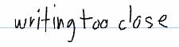
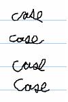
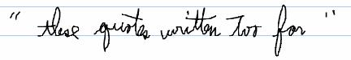

To obtain a level of confidence for each recognition result, you can get either the Confidence property of the RecognitionAlternate object or the Confidence property of the Gesture object. The confidence level is a number that indicates the degree of confidence for each alternate recognition result that the recognizer returns for a corresponding recognition segment.
Confidence is returned as low, average, or high. The application uses these results to:
Some of the things that make handwriting recognition difficult and affect confidence include:



[!Note]
Confidence evaluation is available only for United States English and all gesture recognizers in this release. Methods that provide the confidence property for any other recognizer will return E_NOTIMPL.
Â
Â
Â